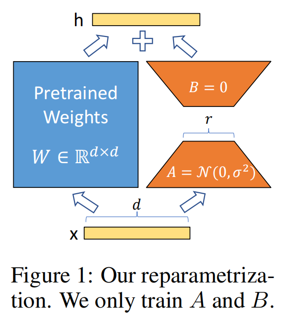

LoRA
一.LoRA原理
参考：https://zhuanlan.zhihu.com/p/702629428 原论文：https://arxiv.org/pdf/2106.09685 LoRA(Low-Rank Adaptation of LLMs)，即LLMs的低秩适应，是参数高效微调最常用的方法。
LoRA的本质就是用更少的训练参数来近似LLM全参数微调所得的增量参数，从而达到使用更少显存占用的高效微调。
1.1实现流程

- 在原始预训练语言模型旁边增加一个旁路，做降维再升维的操作来模拟内在秩；
- 用随机高斯分布初始化 A，用零矩阵初始化B，训练时固定预训练模型的参数，只训练矩阵 A 与矩阵 B；
- 训练完成后，将 B 矩阵与 A 矩阵相乘后合并预训练模型参数作为微调后的模型参数。
具体来讲，预训练权重矩阵 W0 ∈ ℝd × d ，
将增量参数矩阵 ΔW ，表示为两个参数量更小的矩阵 B 和 A 的低秩近似,如下式
W0 + ΔW = W0 + BA
其中 B ∈ ℝd × r ，A ∈ ℝr × d ，秩r远小于d
给定输入.x ∈ ℝd ,添加LoRA后的输出.h ∈ ℝd
h = (W0 + ΔW)x = W0x + BAx
Δh = BAx
1.2LoRA参数合并系数
实际实现时以以下形式合并，其中α为超参数
$$\mathbf{h}=(\mathbf{W}_{0}+\frac{\alpha}{r}\Delta\mathbf{W})\mathbf{x}$$
系数$\frac{\alpha}{r}$越大，LoRA微调权重的影响就越大，在下游任务上越容易过拟合
系数$\frac{\alpha}{r}$越小，LoRA微调权重的影响就越小（微调的效果不明显，原始模型参数受到的影响也较少）
一般来说，在给定任务上LoRA微调，让α为r的2倍数。
1.3 LoRA的秩r如何选择
目标：找到一个秩r，使BA无限接近ΔW的表达能力。
秩r越大，拟合能力越强（甚至出现过拟合），但参与训练的参数量也随之增加。